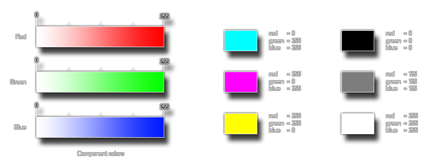

Syntax:
make_colour_rgb(red, green, blue);
| Argument | Description |
|---|---|
| red | The red component of the colour |
| green | The green component of the colour |
| blue | The blue component of the colour |
Returns: value
GameMaker: Studio provides this function (as well as others) to permit the user to make their own colours. This particular function takes three component parts, the red, the green
and the blue components of the colour that you wish to make. These values are taken as being between 0 and 255 so you can make 16,777,216 (256*256*256) colours with this! Below you
can see an image of how these components look when separated:

The image on the left is a break-down of the individual components of the function, and then on the right is an illustration of how changing these components affects the end colour.
col = make_colour_rgb(100, 145, 255);
The above code uses the function to create a colour and store its value in the variable "col" for later use.